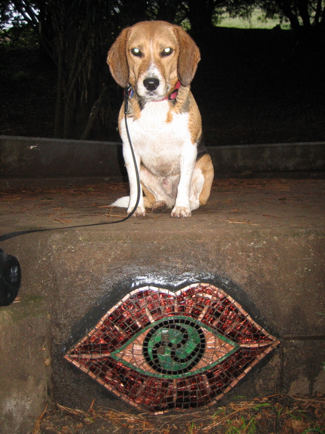

<--Previous Up

The secret of the Esmeralda Steps
Huxley found this earlier this year on one of his weekly walks up Bernal Hill. We stopped by on Saturday's mosaic hike. Runoff from the steps had coated the work in dirt and fungus, so on Monday's walk Dave brought a collapsible jug for water and some towels and cleaned it off, then took this picture. Huxley's green eyes (we needed the flash, since it was early and dark) seem to be possessed by the spirit of the piece.